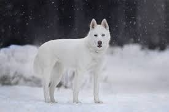
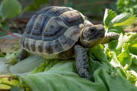
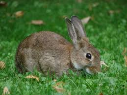
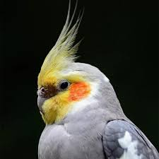
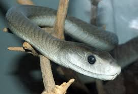

-

Garfiestón
Un felino dramático que parece tranquilo, pero en realidad es un estratega del caos doméstico.
-

BaltoSpark
Hiperactivo nivel caricatura. Siempre listo para una aventura, incluso si nadie más lo está.
-

Donatellento
Maestro de la paciencia. Desaparece por semanas y regresa como si nada hubiera pasado.
-

Bugs Saltarín
Travieso, curioso y con cara de "yo no fui". Le encanta aparecer y desaparecer sin aviso.
-

Pikachupluma
Pequeño pero con gran actitud. Actúa como si fuera la estrella de su propio show animado.
-

Kaa-lamidad
Silenciosa, misteriosa y con mirada hipnótica. Aparece sin avisar, como buen personaje intrigante.